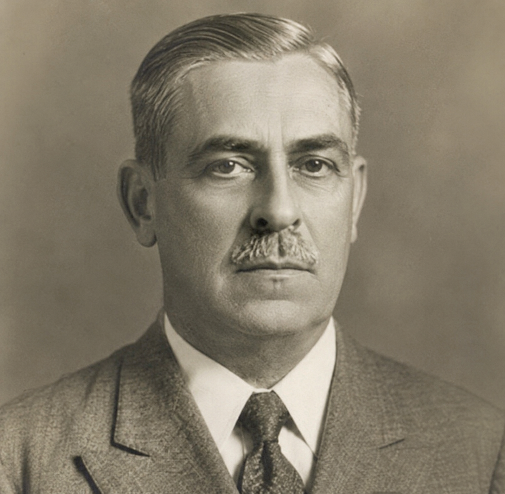

Cobogós
Cobogós

Um dos criadores do cobogó, participou do desenvolvimento desse importante elemento arquitetônico brasileiro.

Engenheiro e inventor que ajudou a criar o conceito moderno e funcional do cobogó

Colaborou na criação do cobogó, que se tornou símbolo da arquitetura brasileira.